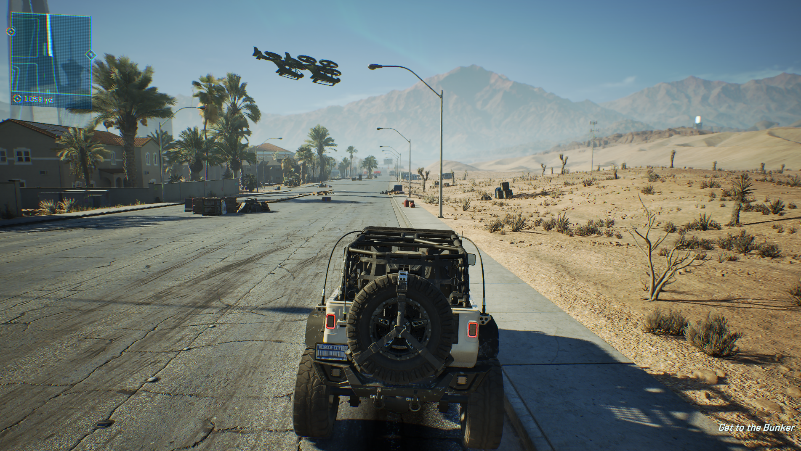
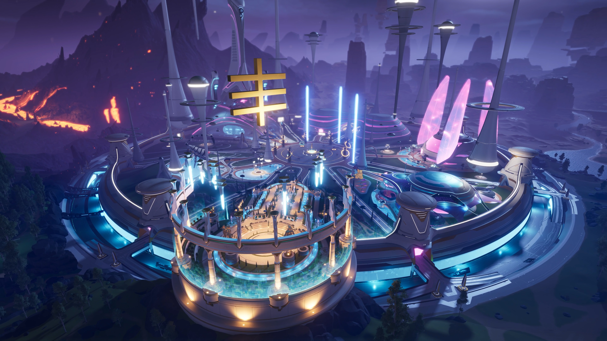
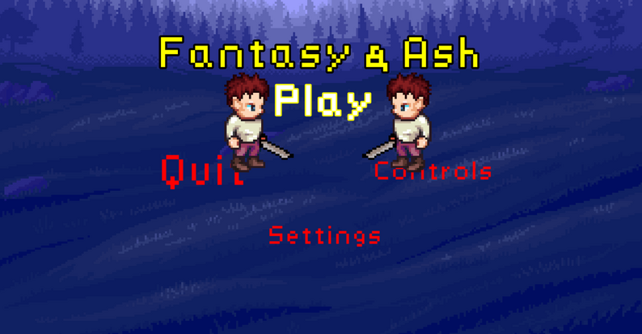
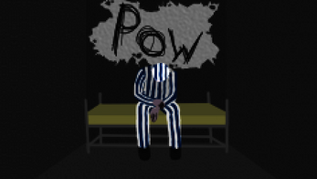
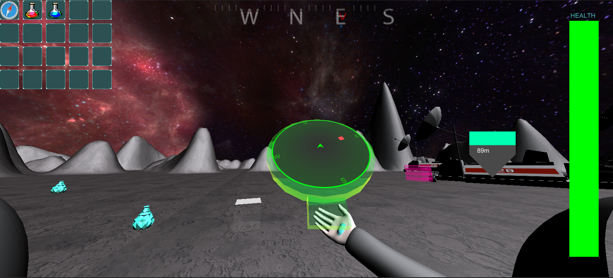

Systems that hold up under pressure.
From RADAR software on the Eurofighter Typhoon to mission scripting on AAA open-world titles — I design, build and test the systems people rely on to work every time.
LeonardoCurrent post
5+ yrsIn production
Games · DefenseSectors
01 About
I'm a technically-focused software engineer with a foundation that runs through both ends of the industry: safety-critical defence systems and AAA game production. At Leonardo I work on RADAR software for the Eurofighter Typhoon, and at Build A Rocket Boy I spent three years scripting missions and multiplayer systems for two large-scale Unreal Engine titles.
What ties it together is a habit of building things that get tested properly — automated pipelines, CI integration, and a Test-Driven mindset — whether the output is a mission players will replay or a system that has to be right the first time.
5+Years in production
2AAA titles shipped
3Sectors: games, defence, fintech
6Languages in daily use
02 Experience
Career log
DEC 2025 — PRESENT ACTIVE
Software Engineer
Leonardo — Edinburgh- Contribute to the development and maintenance of RADAR systems software for the Eurofighter Typhoon using Ada and C++, supporting high-reliability, safety-critical functionality.
- Design, develop and maintain automated test frameworks and scripts in Python, integrating Jenkins-based pipelines to validate system behaviour and support continuous integration testing.
- Collaborate closely with cross-functional engineering teams to keep development, testing and delivery aligned across safety-critical software components.
AdaC++PythonJenkinsCI/CD
DEC 2022 — DEC 2025
Technical Designer
Build A Rocket Boy — Edinburgh- Designed and implemented missions, gameplay systems and multiplayer features for two large-scale projects — Everywhere and Mindseye — using Unreal Engine, C++ and Lua.
- Built and maintained mission testing workflows covering stability, progression flow and multiplayer reliability across both projects.
- Contributed to multiplayer implementation with attention to server/client architecture, replication, synchronisation and responsive networked gameplay.
- Worked directly with executives, creative leads, designers and engineers to prototype features aimed at long-term player engagement.
Unreal EngineC++LuaMultiplayer
MAY 2021 — DEC 2022
Software Tester
The Shopworks — Edinburgh- Built and maintained automated testing pipelines using Testim, Selenium, Node.js and Python, integrated with GitLab CI/CD to improve regression coverage and release reliability.
- Developed Python, Pandas and SQL scripts supporting analytics dashboards, automated reporting and data validation for internal teams.
- Took part in Agile ceremonies — sprint planning, stand-ups and retrospectives — across multiple teams supporting continuous delivery.
SeleniumTestimPythonSQLGitLab CI/CD
JUN 2020 — SEP 2020
Software Engineer Intern
Calnex Solutions — Linlithgow- Created Python-based scripts for network testing using internal APIs and the Delphi IDE.
- Conducted automated regression tests for telecom tools; worked within a Scrum team on rapid iteration cycles.
PythonDelphiScrum
JUN 2019 — SEP 2019
Software Engineer Intern
Viavi Solutions — Newbury- Contributed to secure geo-location data workflows using C#.
- Collaborated with QA and development to resolve high-priority bugs and automate test cases.
C#QA
03 Projects
Featured work
Mindseye

Unreal Engine 5LuaMission Scripting
Mindseye
An episodic action-adventure blending cinematic storytelling with explosive gameplay. As Technical Designer I worked across multiple missions from prototyping through polish — scripting mission logic, tuning AI behaviours, and debugging alongside designers, artists and programmers to hit our quality bar. "A Vital Extraction," a high-speed chase through a scripted urban pursuit, was the standout mission I owned end to end.
Available on PC, PS5 & Xbox
Everywhere

Unreal EngineOnboardingSandbox Systems
Everywhere
An AAA open-world title, currently in Alpha. My focus was the game's introductory missions — the onboarding sequence that teaches new players core mechanics and systems. Getting that first hour right meant carefully pacing controls, objectives and sandbox elements to set the tone for everything that follows.
More on itch.ioOther builds

Fantasy & Ash
A C++ / SFML action RPG built in my third year at university — reincarnation, quests and combat set in the land of Kyntera.
Play on itch.io →
Prisoner Of War
A top-down WWII prison-escape game written in C# and MonoGame — graded A for my college capstone unit.
Play on itch.io →
UI Systems Project
An advanced games-engineering artefact covering Meta, Spatial and Diegetic UI, including an A* pathfinder for the spatial layer.
Read more →04 Skills
Toolkit
— Languages & Scripting
— Testing & QA
— Tools & Systems
— Methodologies
05 Education
Background
BSc (Hons) Games Development
Edinburgh Napier University · 2018 – 2021Key modules: C#, C++, SQL, Unity, AI Systems, Physics-Based Animation. Dissertation: Procedural Generation in Game Environments — graded 2:1.
HNC Games Development
Edinburgh College · 2017 – 2018Covered object-oriented programming, databases, project management and animation pipelines.
06 Connect
Let's talk
Identification Plate // 001
Arran Smedley
Software Engineer · Ex-AAA Technical DesignerOpen to conversations across games, defence and fintech engineering. The fastest way to reach me is LinkedIn — feel free to connect or send a message directly.
LinkedInuk.linkedin.com/in/arran-smedley
Emailarransmedleywork@gmail.com
LocationStirling, Scotland
GitHubgithub.com/ArranSmedley